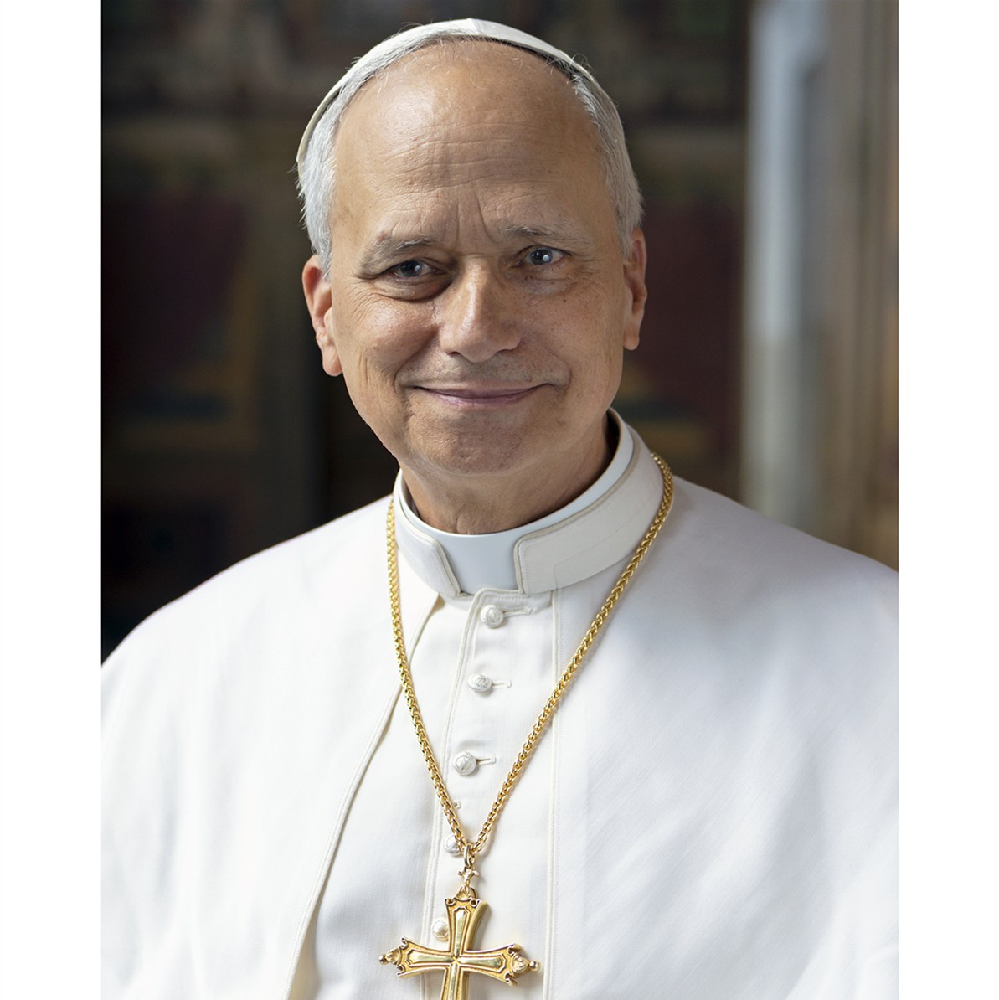

Vela virtual
Acenda simbolicamente uma vela e apresente sua intenção de oração.
Seja bem-vindo à Paróquia São Paulo Apóstolo.
A Paróquia São Paulo Apóstolo é uma comunidade católica em Ferraz de Vasconcelos, chamada a anunciar o Evangelho, celebrar a fé e servir a todos com amor.
Ao longo de sua caminhada, a paróquia cresce e se fortalece por meio de suas comunidades, pastorais, movimentos e de cada pessoa que participa dessa missão.
Oito comunidades, uma só fé. Conheça cada uma delas.
Conheça os sete sacramentos e os caminhos da vida cristã.
Imagens: série Os Sete Sacramentos, de Nicolas Poussin (séc. XVII), obras em domínio público.
Há diferentes formas de participar e colocar seus dons a serviço da comunidade.
Quer participar de uma pastoral? Informe seus dados e a equipe receberá seu interesse pelo WhatsApp da secretaria.
Fortaleça sua fé e apresente suas intenções a Deus.
Acenda simbolicamente uma vela e apresente sua intenção de oração.
Escreva uma intenção para ser apresentada à secretaria paroquial.
Acompanhe uma sequência guiada de oração do Santo Terço.
Celebrações, formações e materiais para acompanhar a vida da nossa comunidade.
Celebramos a vida de nossa comunidade e acompanhamos suas novidades.
Registros de fé, encontros, celebrações e serviço que fazem parte da nossa caminhada.
Pessoas que acompanham e servem à caminhada da Igreja.

Papa da Igreja Católica

Núncio Apostólico

Bispo Diocesano
Pároco
Será uma alegria receber sua mensagem e acolher você em nossa comunidade.
Envie sua mensagem. Estamos aqui para acolher você.
Preencha os dados para iniciar sua inscrição. A secretaria confirmará os próximos passos.